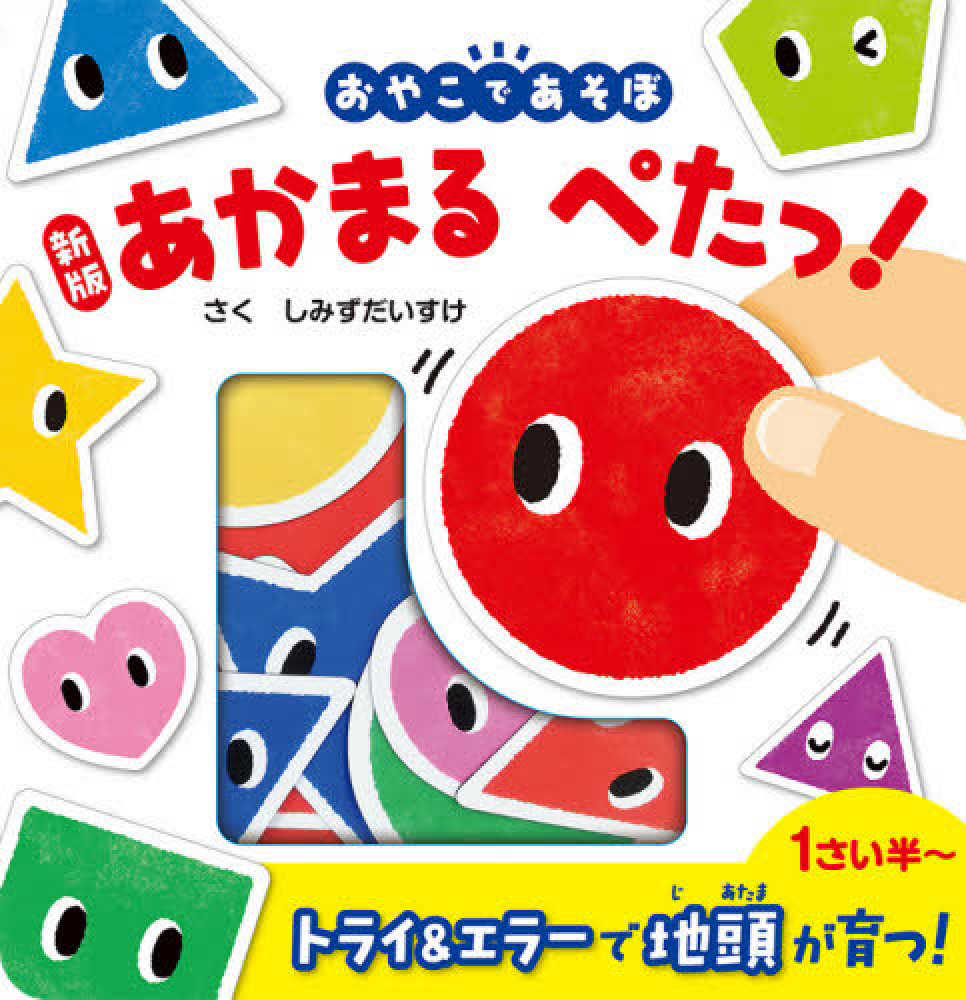

日文互動型｜低幼知育書｜形狀認知
新版 あかまる ぺたっ！
日本磁鐵操作書。
透過「貼一貼」互動玩法，
讓孩子自然認識形狀、顏色、數量與大小概念。
本頁為 SeedKidz 親子互動輔助頁。
因本書屬低幼操作型互動書，閱讀重點在「親子互動」與「動手操作」，因此未另外製作有聲音檔。
因本書屬低幼操作型互動書，閱讀重點在「親子互動」與「動手操作」，因此未另外製作有聲音檔。
📖 書籍內容翻譯
本頁翻譯以「親子共讀理解」為主，著重幫助家長掌握書中的互動玩法與內容意思；部分語句會依中文親子共讀情境自然調整，並非逐字直譯。
第一頁
🇯🇵 おなじものをかさねてぺたっ！
🇨🇳 找到一樣的形狀貼上去吧！
🇺🇸 Put the matching shapes together!
🇯🇵 ★ほかにもやってみましょう
🇨🇳 也可以試試看這樣玩喔！
🇺🇸 Try these fun ideas too!
🇯🇵 ・ぜんぶにあかいろをかさねよう！
🇨🇳 試著把全部都換成紅色看看吧！
🇺🇸 Try using only red shapes!
🇯🇵 右上の表示を参考に、いろいろな方法であそべます。
🇨🇳 可以參考右上角的小提示，還有很多不同玩法喔！
🇺🇸 Check the hints in the top corner for more ways to play!
🇯🇵 いろ かたち かず おおきさ
🇨🇳 顏色／形狀／數量／大小
🇺🇸 Colors / Shapes / Numbers / Sizes
第二頁
🇯🇵 おなじかたちをはめてぺたっ！
🇨🇳 看圖找到相同的形狀貼進去吧！
🇺🇸 Find the matching shapes and fit them in!
🇯🇵 ★ほかにもやってみましょう
🇨🇳 還可以這樣玩看看喔！
🇺🇸 Try these fun ideas too!
🇯🇵 ・ねているまるをはめてみよう！
🇨🇳 找找看閉著眼睛的圓形在哪裡吧！
🇺🇸 Can you find the circle with closed eyes?
🇯🇵 ・あかとあおだけをはめてみよう！
🇨🇳 試著只放紅色和藍色吧！
🇺🇸 Try using only the red and blue shapes!
第三頁
🇯🇵 おなじかたちをならべてぺたっ！
🇨🇳 把相同的形狀排在一起吧！
🇺🇸 Line up the matching shapes together!
🇯🇵 ★ほかにもやってみましょう
🇨🇳 也可以換個方式玩喔！
🇺🇸 Try another fun way to play!
🇯🇵 ・おなじ いろをならべてみよう！
🇨🇳 試著把相同顏色排在一起吧！
🇺🇸 Try grouping the same colors together!
第四頁
🇯🇵 いちばんおおきい まるをぺたっ！
🇨🇳 把最大的圓形貼上去吧！
🇺🇸 Put on the biggest circle!
🇯🇵 いちばんちいさいまるをぺたっ！
🇨🇳 再把最小的圓形貼上去吧！
🇺🇸 Now put on the smallest circle!
🇯🇵 ★ほかにもやってみましょう
🇨🇳 還可以這樣玩喔！
🇺🇸 Try these fun ideas too!
🇯🇵 ・おおきいさんかくをぺたっ！
🇨🇳 找到大的三角形貼上去吧！
🇺🇸 Put on the big triangle!
🇯🇵 ・ちいさい さんかくをぜんぶぺたっ！
🇨🇳 把小小的三角形全部貼上去吧！
🇺🇸 Put on all the little triangles!
第五頁
🇯🇵 しかくをふたつぺたっ！
🇨🇳 貼上兩個正方形吧！
🇺🇸 Put on two squares!
🇯🇵 いろはなんでもいいよ！
🇨🇳 顏色可以自己選喔！
🇺🇸 Any color is okay!
🇯🇵 ★ほかにもやってみましょう
🇨🇳 也來試試其他玩法吧！
🇺🇸 Try more fun ideas too!
🇯🇵 ・ほしをよっつ ぺたっ！
🇨🇳 貼上四顆星星吧！
🇺🇸 Put on four stars!
🇯🇵 ・まるを いつつ ぺたっ！
🇨🇳 再貼上五個圓形吧！
🇺🇸 Put on five circles!
第六頁
🇯🇵 はしからはしまで ぎゅうぎゅうに はろう！
🇨🇳 從這邊一路貼到那邊，貼得滿滿的吧！
🇺🇸 Fill the whole space from side to side!
🇯🇵 ぺたぺたぺたっ！
🇨🇳 貼呀貼呀貼！
🇺🇸 Stick, stick, stick!
🇯🇵 ★ほかにもやってみましょう
🇨🇳 還有更多玩法喔！
🇺🇸 Try even more ways to play!
🇯🇵 引き出しのトレーの裏に、このページのあそび方のヒントがのっています。
🇨🇳 抽屜托盤背面還藏著這一頁的小玩法提示喔！
🇺🇸 Check the back of the tray for more play ideas!
✦ 日本媽媽也會這樣陪孩子玩
🇯🇵 おなじ いろだけ はってみよう！
🇨🇳 試著把相同顏色貼在一起看看吧！
🇺🇸 Try grouping the same colors together!
🇯🇵 いえや くるまを つくってみよう！
🇨🇳 一起拼拼看房子或小汽車吧！
🇺🇸 Try making a house or a car!
🇯🇵 たかく つみあげよう！
🇨🇳 把形狀一個一個疊高高吧！
🇺🇸 Stack the shapes up high!
🇯🇵 「あかはどれ？」「さんかくはいくつ？」など、しつもんをしてあそんでみましょう。
🇨🇳 可以試著問孩子：「哪個是紅色呢？」「有幾個三角形呢？」一起邊問邊玩吧！
🇺🇸 Try asking questions like “Which one is red?” or “How many triangles are there?”
☁️ 陪孩子玩這本書的小技巧
✦ 先玩，再慢慢認識形狀
對低幼孩子來說，最重要的不是立刻記住圓形、三角形、星形，而是「願意動手玩」。先讓孩子享受貼一貼、找一找、拿一拿的樂趣，孩子自然就會開始記住形狀。
✦ 不需要急著糾正
如果孩子貼錯位置，其實沒關係。可以陪孩子一起觀察：「你想貼這裡呀？」「我們再找找看呢？」比起立刻答對，更重要的是孩子願意探索與互動。
✦ 多給孩子小小的成就感
即使只是成功貼上去，對小小孩來說，都是很大的成就。可以多說：「貼上去了！」「你找到星星了！」「好厲害！」孩子會更願意持續互動。
✦ 讓孩子自己選擇
可以問孩子：「今天想玩哪一頁？」「想先玩星星還是圓形？」當孩子開始自己做選擇，會更有參與感與投入感。
✦ 重複玩也沒有關係
低幼孩子很需要「重複感」。同一頁一直玩、一直貼、一直找，都是在建立安全感、熟悉感與觀察力。
🌱 延伸互動方式
✦ 在家裡一起找找看有哪些圓形、星形或三角形物品✦ 用積木、貼紙或玩具玩形狀配對遊戲
✦ 比較大小：「誰比較大？誰比較小？」
✦ 讓孩子自己決定今天想玩哪一頁
✦ 即使重複玩同一頁也沒關係，低幼孩子很需要重複感